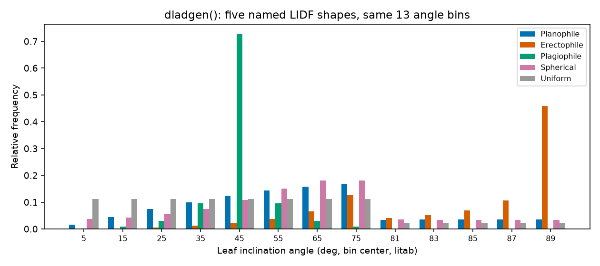
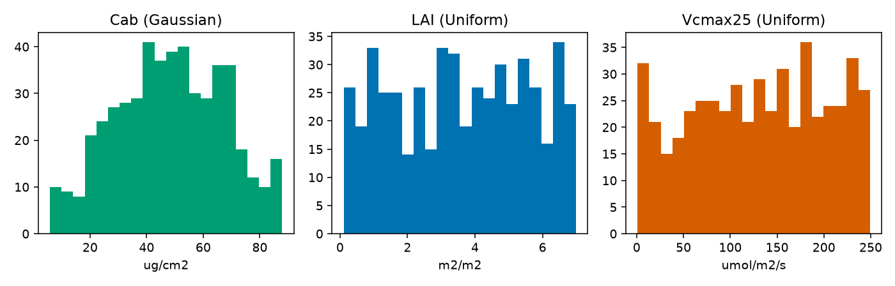

Parameter & Trait Glossary
Every example on this site passes trait values into a leaf, canopy, soil, atmosphere, or SCOPE model without stopping to explain what each one physically means or what a realistic value looks like. This page is that stop: one place with every input’s meaning, units, typical range, and which model(s) actually use it. It mirrors the R side’s own ToolsRTM Parameter & Trait Glossary and SCOPEinR Trait & LUT Glossary – same models, same physics, same parameter names, Python calling convention.
1. Models at a glance
Before the parameter tables: what each named model actually is, and how it differs from its siblings. Section 8 below cross-references every model against every trait it reads.
Leaf models – what goes into a canopy simulation’s leaf optics:
Model |
What it represents |
How it differs from the others |
|---|---|---|
|
The reference leaf model: a stack of |
The default – broadleaf, no fluorescence, dry matter as a single term. |
|
Same physics as PROSPECT-D, but splits |
Only differs from PROSPECT-D in how dry matter is parameterized. |
|
PROSPECT-D’s optics plus chlorophyll-fluorescence excitation-
emission matrices ( |
Adds fluorescence on top of PROSPECT-D; reflectance/transmittance themselves are near-identical to PROSPECT-D. |
|
Fluspect-B plus a |
The only leaf model with a photoprotection ( |
|
A structurally different model built for conifer needles (Dawson et al. 1998) – explicit cell diameter/intercellular air space instead of PROSPECT’s Fresnel-refraction layer. |
Not a PROSPECT variant at all; a genuinely different internal structure, not just different defaults. |
Canopy models – what turns leaf optics into a canopy-level BRDF:
Model |
What it represents |
How it differs from the others |
|---|---|---|
|
The classic PROSAIL turbid-medium canopy: a single, statistically homogeneous “cloud” of leaves at a given LAI and angle distribution – no explicit 3D structure. |
The reference/default; single-layer, single leaf-biochemistry profile. |
|
Two-layer canopy (a green layer + a brown/senescent layer) – a canopy with visible dead/dry material mixed in with live foliage. |
Same turbid-medium idea as fourSAIL, but two vertically-stacked layers instead of one. |
|
Forest-stand extension (Atzberger): explicit tree crowns (stem density, crown diameter, height) over an understorey + background. |
The only one of the three with real gap/shadow geometry – lower reflectance than fourSAIL at the same LAI, matching a discontinuous forest stand’s real physics. |
Soil + atmosphere models:
Model |
What it represents |
How it differs from the others |
|---|---|---|
|
Starts from a real dry reference soil spectrum and adds a physically modelled liquid-water film, so the same soil can be simulated at any moisture level. |
The only soil model driven by an actual measured reference spectrum rather than empirical shape parameters. |
|
Builds a soil spectrum from three empirical parameters
( |
Purely parametric, not spectrum-driven – SPART’s own soil model. |
|
Atmospheric radiative transfer (gas absorption + aerosol scattering) converting top-of-canopy reflectance into what a real satellite sensor would measure above the atmosphere. |
Not a soil or canopy model – the atmosphere step, only relevant when going all the way to top-of-atmosphere (TOA). |
|
Not a new physical model, but the full chain: BSM soil -> fourSAIL canopy -> SMAC atmosphere -> TOA reflectance, already resampled to a real sensor’s bands in one call. |
The end-to-end pipeline; see Examples. |
SCOPE (scopeinpython.scope.get_scope()) builds a fully independent,
larger model on top of this same leaf-optics/canopy-BRDF idea – energy
balance, photosynthesis and fluorescence coupled together, not just
reflectance – see Section 7 below for its own five-component breakdown.
2. Leaf traits
All leaf models (toolsrtm.leaf.prospect_d(), toolsrtm.leaf.prospect_pro(),
toolsrtm.liberty.liberty(), toolsrtm.fluspect.fluspect_b()) build on the same
PROSPECT physics: a leaf is treated as a stack of absorbing/scattering
plates, and each trait below is one absorbing constituent (a pigment,
water, dry matter) or one structural parameter of that stack.
Symbol |
Meaning |
Units |
Typical range |
Used by |
|---|---|---|---|---|
|
Leaf structure parameter – effective number of compound-leaf
“plates” the PROSPECT mesophyll model integrates over. Higher
|
unitless |
1 – 3 (rarely up to 4.5) |
prospect_d, prospect_pro, fluspect_b |
|
Chlorophyll a+b content. The single strongest driver of visible- light (400-700nm) absorption – healthy green leaves sit high in this range, senescent/stressed leaves low. |
ug/cm2 |
0 – 100 (20-80 typical, healthy) |
prospect_d, prospect_pro, fluspect_b |
|
Carotenoid content (mostly xanthophylls + beta-carotene). Absorbs
alongside |
ug/cm2 |
0 – 25 |
prospect_d, prospect_pro, fluspect_b |
|
Anthocyanin content. Usually near zero in healthy green leaves; rises under stress or senescence. |
ug/cm2 |
0 – 40 (0 – ~7 typical crop) |
prospect_d, prospect_pro |
|
Brown-pigment absorption coefficient – a lumped, unitless proxy for senescent/degraded material, not a physical concentration. |
unitless (0-1) |
0 (green) – 1 (senescent) |
prospect_d, prospect_pro |
|
Equivalent water thickness – the water column each unit leaf area would form if spread into a uniform film. Drives the SWIR water-absorption features (~1450/1940/2500nm). |
cm (equiv. g/cm2) |
0.002 – 0.05 (0.01-0.02 typical) |
prospect_d, prospect_pro, fluspect_b, liberty |
|
Leaf mass per area – total dry matter content, lumping cellulose, lignin, protein and everything else that isn’t water or pigment. |
g/cm2 |
0.002 – 0.02 |
prospect_d, fluspect_b |
|
Leaf-air interface incidence-angle parameter (Fresnel refraction, Stern-Gershun/Allen) – a geometric-optics constant of the model itself, not a leaf biochemistry trait. |
degrees |
fixed at 40 in virtually all published PROSPECT work |
prospect_d, prospect_pro, fluspect_b |
|
Protein content – one of two constituents |
g/cm2 |
0 – 0.01 |
prospect_pro |
|
Carbon-based constituents (cellulose + lignin) – the other
constituent |
g/cm2 |
0 – 0.02 |
prospect_pro |
|
Senescent-material absorption coefficient (Fluspect’s own,
separate from PROSPECT’s |
unitless (0-1) |
0 (fresh) – 1 |
fluspect_b |
|
Xanthophyll de-epoxidation state – violaxanthin-to-zeaxanthin conversion fraction (the photoprotective NPQ pigment pool). |
unitless (0-1) |
0 (relaxed) – 1 (photoprotecting) |
fluspect_b |
|
Fluorescence quantum efficiency – how much absorbed PAR is re-emitted as chlorophyll fluorescence. |
unitless |
~0.01 typical default |
fluspect_b |
prospect_pro and plain LMA-based models are mutually exclusive
dry-matter parameterizations of the same leaf – supplying both
LMA and non-zero Prot/CBC in one call is a modelling choice,
not something the package validates for you.
LIBERTY-only structural traits
toolsrtm.liberty.liberty() targets conifer needles, not broadleaves, and
needs explicit cell geometry instead of PROSPECT’s N/alpha
Fresnel-optics layer:
Symbol |
Meaning |
Units |
Typical range |
|---|---|---|---|
|
Average mesophyll cell diameter. |
um |
20 – 60 |
|
Intercellular air-space fraction – the needle analogue of
PROSPECT’s |
unitless (0-1) |
0.03 – 0.06 |
|
Baseline (wavelength-flat) absorption coefficient. |
unitless |
~0.0005 – 0.001 |
|
Needle thickness. |
relative units |
1 – 2 |
|
Extra absorption for albino/depigmented tissue. |
unitless |
0 (typical) |
|
Lignin+cellulose cell-wall absorption term. |
unitless |
1 – 3 |
|
Foliar nitrogen content, scaling protein-related absorption. |
relative units |
~1 (typical default) |
3. Canopy structure and viewing geometry
Once a leaf model produces reflectance/transmittance,
toolsrtm.canopy.foursail(), foursail2, and toolsrtm.inform.inform() turn
it into a canopy-level BRF, sharing the geometry/LIDF parameters below:
Symbol |
Meaning |
Units |
Typical range |
|---|---|---|---|
|
Leaf area index – total one-sided leaf area per unit ground area. The strongest canopy-level driver of NIR-plateau height and visible-band saturation. |
m2/m2 |
0.1 – 8 (0 = bare soil) |
|
Leaf inclination distribution shape parameters (Verhoef 1998,
|
unitless, each in [-1, 1] |
see Section 4 |
|
|
|
– |
|
Hot-spot size parameter – leaf width / canopy height. |
unitless |
0.01 – 0.5 |
|
Sun zenith / view zenith / relative azimuth. |
degrees |
0-90 / 0-90 / 0-180 |
4. Named leaf-angle distributions
from toolsrtm.canopy import dladgen
spherical = dladgen(-0.35, -0.15) # this package's own "no strong prior" default
print(spherical.lidf, spherical.litab)
Name |
|
|
Typical canopy |
|---|---|---|---|
Planophile |
1 |
0 |
Mostly horizontal leaves (many crops, grasses) |
Erectophile |
-1 |
0 |
Mostly vertical leaves (some grasses, conifers) |
Plagiophile |
0 |
-1 |
Mostly oblique (~45 deg) leaves |
Extremophile |
0 |
1 |
Bimodal horizontal+vertical mix |
Spherical |
-0.35 |
-0.15 |
Sphere-distributed angles – most common default, used throughout this site’s own examples |
Uniform |
0 |
0 |
All angles equally likely |
{kind=link}

Real output: dladgen()’s relative frequency per leaf-angle bin, for five named shapes. Planophile concentrates mass at low angles (horizontal leaves), erectophile at high angles (vertical leaves), spherical spreads smoothly across the whole range.
5. Soil: MARMIT (dry -> wet)
toolsrtm.marmit.get_marmit_rsoil() turns a dry reference soil spectrum into
a wet one:
Symbol |
Meaning |
Typical range |
|---|---|---|
|
Which dry reference spectrum to start from, from a bundled soil- spectral-library database. |
database-dependent |
|
Water-film optical thickness (cm). Near 0 is dry, larger is wetter. |
0.001 (dry) – 0.15+ (wet) |
|
Soil surface roughness/optical-path parameter. |
0.05 (dry/smooth) – 1.0 (wet/rough) |
6. Soil + atmosphere: SPART (BSM soil, SMAC atmosphere)
toolsrtm.spart.spart_toa() (and scopeinpython.soil.get_bsm()) use BSM
soil plus SMAC atmospheric correction:
Symbol |
Meaning |
Typical range |
|---|---|---|
|
Overall soil brightness. |
0.3 – 0.9 |
|
Soil spectral-shape “latitude”/”longitude” – BSM-specific empirical shape parameters, not geographic coordinates. |
20-40 / 45-65 |
|
Soil moisture, volume percentage. |
5 – 55 % |
|
Soil moisture capacity. |
~25 (recommended) |
|
Effective optical thickness of a single water film. |
~0.015 (recommended) |
|
Atmospheric surface pressure. |
~900-1030 hPa |
|
Aerosol optical thickness at 550nm. |
0.05 (clear) – 0.5+ (hazy) |
|
Total-column ozone. |
~0.3-0.4 atm-cm |
|
Total-column water vapour. |
~1-3 g/cm2 |
7. SCOPE traits: leaf + photosynthesis + fluorescence + energy balance
scopeinpython.scope.get_scope() isn’t one model – it’s five distinct
components chained together, each solving a different piece of physics:
Component |
What it does |
Depends on |
|---|---|---|
|
Leaf optics: reflectance/transmittance + fluorescence excitation- emission matrices, per canopy layer. Same PROSPECT/Fluspect physics as Section 1’s leaf models – just the SCOPE-specific wrapper. |
Leaf biochemistry traits (below) |
Optical top-of-canopy BRDF – physically the same turbid-medium idea as fourSAIL, re-implemented to plug into the layers below. Stops at reflectance; assumes no temperature yet. |
Fluspect-Cx output + canopy structure + BSM soil |
|
The energy balance: iteratively solves leaf and soil temperature so absorbed radiation balances sensible + latent heat, calling the biochemistry model at every candidate temperature. This is what makes SCOPE fundamentally different from PROSAIL/SPART – temperature is solved for, not assumed. |
RTMo output + aerodynamic resistances + meteorology |
|
Leaf-level photosynthesis (Farquhar/Collatz) and fluorescence
yield, given a leaf micro-environment – called repeatedly by
|
Photosynthesis + NPQ traits (below) |
|
Canopy-level fluorescence radiance/flux, and a small zeaxanthin (photoprotection) correction to the TOC spectrum – both derived from the already-solved energy balance. |
ebal output + Fluspect-Cx’s fluorescence matrices |
get_scope() runs all five for one LUT row and returns everything
together. Its leaf-biochemistry traits are exactly Section 2’s
PROSPECT/Fluspect traits – the traits genuinely unique to SCOPE:
Symbol |
Meaning |
Units |
Typical range |
|---|---|---|---|
|
Maximum carboxylation capacity of Rubisco at 25degC – the biggest driver of photosynthetic capacity (and fluorescence yield). Low (<20) = stressed/senescent; 40-120 = typical healthy. |
umol/m2/s |
0.75 – 250 |
|
Ball-Berry stomatal conductance model: steeper slope tracks
photosynthesis more tightly; |
unitless / mol H2O/m2/s |
1-20 / 0.01-0.05 |
|
Canopy-depth extinction coefficient for |
unitless |
~0.64 typical |
|
Dark respiration as a fraction of |
unitless |
~0.015 typical |
|
Non-photochemical-quenching (NPQ) response constants (van der
Tol et al. 2014); |
unitless |
published SCOPE defaults |
|
Sustained (stress-related) quenching terms, defaulted “off”
( |
unitless |
0/1/1 = unstressed |
|
Canopy height – needed for the aerodynamic-resistance chain plain optical-only fourSAIL never needs. |
m |
0.5 – 5 |
|
Atmospheric CO2 (ppm) / O2 concentration – both feed the Farquhar Ci-solver directly. |
ppm / mbar-equiv. |
~410 / ~209 |
The full ~65-variable table, straight from the package’s own bundled
inputs_SCOPE.csv (units, range, distribution, default – nothing
re-typed by hand), lives in the R side’s SCOPEinR Trait & LUT Glossary
– the same CSV drives both the R and Python capstone examples on
Examples.
8. A real LUT: sampling and inspecting a few traits
Each row of inputs_SCOPE.csv carries its own Distribution
(Uniform/Gaussian/Fixed) plus lower/upper bounds –
the same table scopeinpython.scope.get_scope()’s Sentinel-2 capstone
example (Examples) samples from:
import csv
import numpy as np
def build_scope_lut(csv_path, n, seed):
rng = np.random.default_rng(seed)
with open(csv_path, newline="", encoding="utf-8-sig") as f:
rows = list(csv.DictReader(f))
lut = {}
for row in rows:
trait, dist = row["variable"], row["Distribution"]
if trait in ("startDate", "endDate", "Type"):
continue
lo, hi = float(row["lower"]), float(row["upper"])
if dist == "Uniform":
lut[trait] = rng.uniform(lo, hi, size=n)
elif dist == "Fixed":
lut[trait] = np.full(n, float(row["default"]))
else: # Gaussian, clipped to [lo, hi]
mean, std = float(row["Mean_D"]), float(row["Std_D"])
vals = rng.normal(mean, std, size=n * 3)
lut[trait] = vals[(vals >= lo) & (vals <= hi)][:n]
return lut
lut = build_scope_lut("SCOPEinR/inst/input/inputs_SCOPE.csv", n=500, seed=1)
print(lut["Cab"].mean(), lut["LAI"].min(), lut["LAI"].max())
{kind=link}

Real output: Cab’s histogram is visibly bell-shaped (Distribution="Gaussian", Mean_D=50, Std_D=20, clipped to [5, 90]), while LAI and Vcmax25 (both "Uniform") are flat across their own ranges.
What’s next
Examples – every model in this glossary, used in a runnable, verified example.
ToolsRTM Parameter & Trait Glossary and SCOPEinR Trait & LUT Glossary – this page’s R-side counterparts, with the full ~65-variable SCOPE table and named-LIDF bar chart in R.
toolsrtm / scopeinpython – the full function reference, each page now with its own runnable Quick example.